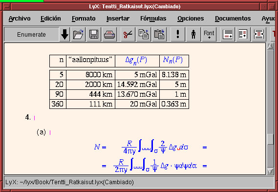

![[ TABLE OF CONTENTS ]](../gx/indexnew.gif)
![[ FRONT PAGE ]](../gx/homenew.gif)


If you are like me, you may be all the time on the lookout for nifty
little utilities and the like, that might make life easier and more pleasant
for end users. I came into Linux rather late in the process, February 1997,
and although I know how to program (and have written a few handy little
things too, using this great new language tcl/tk), due to
time constraints, I have felt no strong inclination to join ranks with
the hacker community. Heck, I never even compiled my own kernel!
A recommended fax package for Linux is fax/efax/efix by Ed Casas. fax is an ordinary shell script, containing calls to the binary modules efax (taking care of the difficult, low-level faxing stuff) and efix (taking care of some file format conversions needed). They work, but are command-line stuff; not for dummies.
For sending faxes using efax you can use LyX, the graphical word processor running on top of LaTeX. I can really recommend this word processor: especially the new release 0.12 is great, with lots of new features including on-the-fly localization. See the review by Larry Ayers in the last issue of Linux Gazette, and a picture (I couldn't resist) below.

For receiving faxes, it is possible to install efax as a daemon through the bootup script (see man page), so it continually waits for faxes to come in. It is even possible to do this in such a way, that it does not get in the way of outgoing traffic, e.g. an Internet connection. Then, when this connection closes, the deamon starts again listening to the serial port.
Any faxes received will be stored into a spool directory, typically (Red Hat) /var/spool/fax/. You can make xbiff or xmailbox look if faxes have arrived into the spool directory, and signal it to the user. I haven't tried this, though. There are various ways to read messages from the spool directory. Ed Casas' script fax can be used, but is so unbecoming. I really would love it if there was a graphical client to do this!
So... I decided to do a search, an extensive one, using Alta Vista. No luck. Following links, I found a number of listings of fax and communication software, including Hylafax, which is a fax server application for network use, undoubtedly good, but not what I was looking for. Then I decided, OK, it cannot be too hard to write a thing like this myself. I started coding, and after three hours or so, I had the skeleton of a working graphical fax client running.
I wanted my skeleton script to use the existing utility viewfax
(a GNU product) to display fax pages on the screen. The program -- found
in the RPM package mgetty-viewfax
-- is very fast and very convenient, but with a slightly "emacsish"
user interface. Well, what the heck. I read the man page and found there
a reference to faxview.tcl, a tcl/tk
"graphical front end" to viewfax. Precisely what I was trying to write!
.
I downloaded the faxview-1.0 tarball from the ftp server at ftp://ftp.UL.BaWue.DE/pub/purple/fax, extracted the files faxview (the tcl/tk script) and faxview.1 (the man page) from it. It worked great (see picture)! The author of this software is Ralph Schleicher from Ulm, Germany. So much for reinventing the wheel... this really raises some questions:
Martin Vermeer
mv@fgi.fi